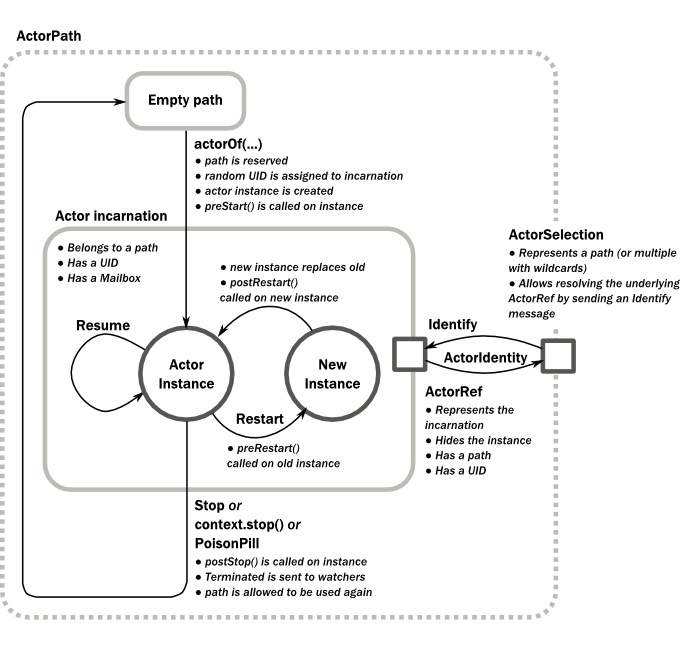

Actors
The Actor Model provides a higher level of abstraction for writing concurrent and distributed systems. It alleviates the developer from having to deal with explicit locking and thread management, making it easier to write correct concurrent and parallel systems. Actors were defined in the 1973 paper by Carl Hewitt but have been popularized by the Erlang language, and used for example at Ericsson with great success to build highly concurrent and reliable telecom systems.
The API of Akka’s Actors is similar to Scala Actors which has borrowed some of its syntax from Erlang.
Creating Actors
注釈
Since Akka enforces parental supervision every actor is supervised and (potentially) the supervisor of its children, it is advisable that you familiarize yourself with Actor Systems and Supervision and Monitoring and it may also help to read Actor References, Paths and Addresses.
Defining an Actor class
Actors in Java are implemented by extending the UntypedActor class and implementing the
onReceive method. This method takes the message as a parameter.
Here is an example:
import akka.actor.UntypedActor;
import akka.event.Logging;
import akka.event.LoggingAdapter;
public class MyUntypedActor extends UntypedActor {
LoggingAdapter log = Logging.getLogger(getContext().system(), this);
public void onReceive(Object message) throws Exception {
if (message instanceof String) {
log.info("Received String message: {}", message);
getSender().tell(message, getSelf());
} else
unhandled(message);
}
}
Props
Props is a configuration class to specify options for the creation
of actors, think of it as an immutable and thus freely shareable recipe for
creating an actor including associated deployment information (e.g. which
dispatcher to use, see more below). Here are some examples of how to create a
Props instance.
import akka.actor.Props;
import akka.japi.Creator;
static class MyActorC implements Creator<MyActor> {
@Override public MyActor create() {
return new MyActor("...");
}
}
Props props1 = Props.create(MyUntypedActor.class);
Props props2 = Props.create(MyActor.class, "...");
Props props3 = Props.create(new MyActorC());
The second line shows how to pass constructor arguments to the Actor
being created. The presence of a matching constructor is verified during
construction of the Props object, resulting in an
IllegalArgumentException if no or multiple matching constructors are
found.
The third line demonstrates the use of a Creator. The
creator class must be static, which is verified during Props
construction. The type parameter’s upper bound is used to determine the
produced actor class, falling back to Actor if fully erased. An
example of a parametric factory could be:
static class ParametricCreator<T extends MyActor> implements Creator<T> {
@Override public T create() {
// ... fabricate actor here
}
}
注釈
In order for mailbox requirements—like using a deque-based mailbox for actors
using the stash—to be picked up, the actor type needs to be known before
creating it, which is what the Creator type argument allows.
Therefore make sure to use the specific type for your actors wherever
possible.
Recommended Practices
It is a good idea to provide static factory methods on the
UntypedActor which help keeping the creation of suitable
Props as close to the actor definition as possible. This also allows
usage of the Creator-based methods which statically verify that the
used constructor actually exists instead relying only on a runtime check.
public class DemoActor extends UntypedActor {
/**
* Create Props for an actor of this type.
* @param magicNumber The magic number to be passed to this actor’s constructor.
* @return a Props for creating this actor, which can then be further configured
* (e.g. calling `.withDispatcher()` on it)
*/
public static Props props(final int magicNumber) {
return Props.create(new Creator<DemoActor>() {
private static final long serialVersionUID = 1L;
@Override
public DemoActor create() throws Exception {
return new DemoActor(magicNumber);
}
});
}
final int magicNumber;
public DemoActor(int magicNumber) {
this.magicNumber = magicNumber;
}
@Override
public void onReceive(Object msg) {
// some behavior here
}
}
system.actorOf(DemoActor.props(42), "demo");
Another good practice is to declare what messages an Actor can receive as close to the actor definition as possible (e.g. as static classes inside the Actor or using other suitable class), which makes it easier to know what it can receive.
public class DemoMessagesActor extends UntypedActor {
static public class Greeting {
private final String from;
public Greeting(String from) {
this.from = from;
}
public String getGreeter() {
return from;
}
}
public void onReceive(Object message) throws Exception {
if (message instanceof Greeting) {
getSender().tell("Hello " + ((Greeting) message).getGreeter(), getSelf());
} else
unhandled(message);
}
}
Creating Actors with Props
Actors are created by passing a Props instance into the
actorOf factory method which is available on ActorSystem and
ActorContext.
import akka.actor.ActorRef;
import akka.actor.ActorSystem;
// ActorSystem is a heavy object: create only one per application
final ActorSystem system = ActorSystem.create("MySystem");
final ActorRef myActor = system.actorOf(Props.create(MyUntypedActor.class),
"myactor");
Using the ActorSystem will create top-level actors, supervised by the
actor system’s provided guardian actor, while using an actor’s context will
create a child actor.
class A extends UntypedActor {
final ActorRef child =
getContext().actorOf(Props.create(MyUntypedActor.class), "myChild");
// plus some behavior ...
}
It is recommended to create a hierarchy of children, grand-children and so on such that it fits the logical failure-handling structure of the application, see Actor Systems.
The call to actorOf returns an instance of ActorRef. This is a
handle to the actor instance and the only way to interact with it. The
ActorRef is immutable and has a one to one relationship with the Actor
it represents. The ActorRef is also serializable and network-aware.
This means that you can serialize it, send it over the wire and use it on a
remote host and it will still be representing the same Actor on the original
node, across the network.
The name parameter is optional, but you should preferably name your actors,
since that is used in log messages and for identifying actors. The name must
not be empty or start with $, but it may contain URL encoded characters
(eg. %20 for a blank space). If the given name is already in use by
another child to the same parent an InvalidActorNameException is thrown.
Actors are automatically started asynchronously when created.
Dependency Injection
If your UntypedActor has a constructor that takes parameters then those need to
be part of the Props as well, as described above. But there
are cases when a factory method must be used, for example when the actual
constructor arguments are determined by a dependency injection framework.
import akka.actor.Actor;
import akka.actor.IndirectActorProducer;
class DependencyInjector implements IndirectActorProducer {
final Object applicationContext;
final String beanName;
public DependencyInjector(Object applicationContext, String beanName) {
this.applicationContext = applicationContext;
this.beanName = beanName;
}
@Override
public Class<? extends Actor> actorClass() {
return MyActor.class;
}
@Override
public MyActor produce() {
MyActor result;
// obtain fresh Actor instance from DI framework ...
return result;
}
}
final ActorRef myActor = getContext().actorOf(
Props.create(DependencyInjector.class, applicationContext, "MyActor"),
"myactor3");
警告
You might be tempted at times to offer an IndirectActorProducer
which always returns the same instance, e.g. by using a static field. This is
not supported, as it goes against the meaning of an actor restart, which is
described here: What Restarting Means.
When using a dependency injection framework, actor beans MUST NOT have singleton scope.
Techniques for dependency injection and integration with dependency injection frameworks are described in more depth in the Using Akka with Dependency Injection guideline and the Akka Java Spring tutorial in Lightbend Activator.
The Inbox
When writing code outside of actors which shall communicate with actors, the
ask pattern can be a solution (see below), but there are two things it
cannot do: receiving multiple replies (e.g. by subscribing an ActorRef
to a notification service) and watching other actors’ lifecycle. For these
purposes there is the Inbox class:
final Inbox inbox = Inbox.create(system);
inbox.send(target, "hello");
try {
assert inbox.receive(Duration.create(1, TimeUnit.SECONDS)).equals("world");
} catch (java.util.concurrent.TimeoutException e) {
// timeout
}
The send method wraps a normal tell and supplies the internal
actor’s reference as the sender. This allows the reply to be received on the
last line. Watching an actor is quite simple as well:
final Inbox inbox = Inbox.create(system);
inbox.watch(target);
target.tell(PoisonPill.getInstance(), ActorRef.noSender());
try {
assert inbox.receive(Duration.create(1, TimeUnit.SECONDS)) instanceof Terminated;
} catch (java.util.concurrent.TimeoutException e) {
// timeout
}
UntypedActor API
The UntypedActor class defines only one abstract method, the above mentioned
onReceive(Object message), which implements the behavior of the actor.
If the current actor behavior does not match a received message, it's recommended that
you call the unhandled method, which by default publishes a new
akka.actor.UnhandledMessage(message, sender, recipient) on the actor system’s
event stream (set configuration item akka.actor.debug.unhandled to on
to have them converted into actual Debug messages).
In addition, it offers:
getSelfreference to theActorRefof the actorgetSenderreference sender Actor of the last received message, typically used as described in Reply to messagessupervisorStrategyuser overridable definition the strategy to use for supervising child actorsThis strategy is typically declared inside the actor in order to have access to the actor’s internal state within the decider function: since failure is communicated as a message sent to the supervisor and processed like other messages (albeit outside of the normal behavior), all values and variables within the actor are available, as is the
getSender()reference (which will be the immediate child reporting the failure; if the original failure occurred within a distant descendant it is still reported one level up at a time).getContextexposes contextual information for the actor and the current message, such as:- factory methods to create child actors (
actorOf) - system that the actor belongs to
- parent supervisor
- supervised children
- lifecycle monitoring
- hotswap behavior stack as described in HotSwap
- factory methods to create child actors (
The remaining visible methods are user-overridable life-cycle hooks which are described in the following:
public void preStart() {
}
public void preRestart(Throwable reason, scala.Option<Object> message) {
for (ActorRef each : getContext().getChildren()) {
getContext().unwatch(each);
getContext().stop(each);
}
postStop();
}
public void postRestart(Throwable reason) {
preStart();
}
public void postStop() {
}
The implementations shown above are the defaults provided by the UntypedActor
class.
Actor Lifecycle
{kind=link}
A path in an actor system represents a "place" which might be occupied
by a living actor. Initially (apart from system initialized actors) a path is
empty. When actorOf() is called it assigns an incarnation of the actor
described by the passed Props to the given path. An actor incarnation is
identified by the path and a UID. A restart only swaps the Actor
instance defined by the Props but the incarnation and hence the UID remains
the same.
The lifecycle of an incarnation ends when the actor is stopped. At
that point the appropriate lifecycle events are called and watching actors
are notified of the termination. After the incarnation is stopped, the path can
be reused again by creating an actor with actorOf(). In this case the
name of the new incarnation will be the same as the previous one but the
UIDs will differ. An actor can be stopped by the actor itself, another actor
or the ActorSystem (see Stopping actors).
注釈
It is important to note that Actors do not stop automatically when no longer referenced, every Actor that is created must also explicitly be destroyed. The only simplification is that stopping a parent Actor will also recursively stop all the child Actors that this parent has created.
An ActorRef always represents an incarnation (path and UID) not just a
given path. Therefore if an actor is stopped and a new one with the same
name is created an ActorRef of the old incarnation will not point
to the new one.
ActorSelection on the other hand points to the path (or multiple paths
if wildcards are used) and is completely oblivious to which incarnation is currently
occupying it. ActorSelection cannot be watched for this reason. It is
possible to resolve the current incarnation's ActorRef living under the
path by sending an Identify message to the ActorSelection which
will be replied to with an ActorIdentity containing the correct reference
(see Identifying Actors via Actor Selection). This can also be done with the resolveOne
method of the ActorSelection, which returns a Future of the matching
ActorRef.
Lifecycle Monitoring aka DeathWatch
In order to be notified when another actor terminates (i.e. stops permanently,
not temporary failure and restart), an actor may register itself for reception
of the Terminated message dispatched by the other actor upon
termination (see Stopping Actors). This service is provided by the
DeathWatch component of the actor system.
Registering a monitor is easy (see fourth line, the rest is for demonstrating the whole functionality):
import akka.actor.Terminated;
public class WatchActor extends UntypedActor {
final ActorRef child = this.getContext().actorOf(Props.empty(), "child");
{
this.getContext().watch(child); // <-- the only call needed for registration
}
ActorRef lastSender = getContext().system().deadLetters();
@Override
public void onReceive(Object message) {
if (message.equals("kill")) {
getContext().stop(child);
lastSender = getSender();
} else if (message instanceof Terminated) {
final Terminated t = (Terminated) message;
if (t.getActor() == child) {
lastSender.tell("finished", getSelf());
}
} else {
unhandled(message);
}
}
}
It should be noted that the Terminated message is generated
independent of the order in which registration and termination occur.
In particular, the watching actor will receive a Terminated message
even if the watched actor has already been terminated at the time of registration.
Registering multiple times does not necessarily lead to multiple messages being
generated, but there is no guarantee that only exactly one such message is
received: if termination of the watched actor has generated and queued the
message, and another registration is done before this message has been
processed, then a second message will be queued, because registering for
monitoring of an already terminated actor leads to the immediate generation of
the Terminated message.
It is also possible to deregister from watching another actor’s liveliness
using getContext().unwatch(target). This works even if the
Terminated message has already been enqueued in the mailbox; after
calling unwatch no Terminated message for that actor will be
processed anymore.
Start Hook
Right after starting the actor, its preStart method is invoked.
@Override
public void preStart() {
child = getContext().actorOf(Props.empty());
}
This method is called when the actor is first created. During restarts it is
called by the default implementation of postRestart, which means that
by overriding that method you can choose whether the initialization code in
this method is called only exactly once for this actor or for every restart.
Initialization code which is part of the actor’s constructor will always be
called when an instance of the actor class is created, which happens at every
restart.
Restart Hooks
All actors are supervised, i.e. linked to another actor with a fault handling strategy. Actors may be restarted in case an exception is thrown while processing a message (see Supervision and Monitoring). This restart involves the hooks mentioned above:
The old actor is informed by calling
preRestartwith the exception which caused the restart and the message which triggered that exception; the latter may beNoneif the restart was not caused by processing a message, e.g. when a supervisor does not trap the exception and is restarted in turn by its supervisor, or if an actor is restarted due to a sibling’s failure. If the message is available, then that message’s sender is also accessible in the usual way (i.e. by callinggetSender()).This method is the best place for cleaning up, preparing hand-over to the fresh actor instance, etc. By default it stops all children and calls
postStop.The initial factory from the
actorOfcall is used to produce the fresh instance.The new actor’s
postRestartmethod is invoked with the exception which caused the restart. By default thepreStartis called, just as in the normal start-up case.
An actor restart replaces only the actual actor object; the contents of the
mailbox is unaffected by the restart, so processing of messages will resume
after the postRestart hook returns. The message
that triggered the exception will not be received again. Any message
sent to an actor while it is being restarted will be queued to its mailbox as
usual.
警告
Be aware that the ordering of failure notifications relative to user messages is not deterministic. In particular, a parent might restart its child before it has processed the last messages sent by the child before the failure. See Discussion: Message Ordering for details.
Stop Hook
After stopping an actor, its postStop hook is called, which may be used
e.g. for deregistering this actor from other services. This hook is guaranteed
to run after message queuing has been disabled for this actor, i.e. messages
sent to a stopped actor will be redirected to the deadLetters of the
ActorSystem.
Identifying Actors via Actor Selection
As described in Actor References, Paths and Addresses, each actor has a unique logical path, which
is obtained by following the chain of actors from child to parent until
reaching the root of the actor system, and it has a physical path, which may
differ if the supervision chain includes any remote supervisors. These paths
are used by the system to look up actors, e.g. when a remote message is
received and the recipient is searched, but they are also useful more directly:
actors may look up other actors by specifying absolute or relative
paths—logical or physical—and receive back an ActorSelection with the
result:
// will look up this absolute path
getContext().actorSelection("/user/serviceA/actor");
// will look up sibling beneath same supervisor
getContext().actorSelection("../joe");
注釈
It is always preferable to communicate with other Actors using their ActorRef instead of relying upon ActorSelection. Exceptions are
- sending messages using the At-Least-Once Delivery facility
- initiating first contact with a remote system
In all other cases ActorRefs can be provided during Actor creation or initialization, passing them from parent to child or introducing Actors by sending their ActorRefs to other Actors within messages.
The supplied path is parsed as a java.net.URI, which basically means
that it is split on / into path elements. If the path starts with /, it
is absolute and the look-up starts at the root guardian (which is the parent of
"/user"); otherwise it starts at the current actor. If a path element equals
.., the look-up will take a step “up” towards the supervisor of the
currently traversed actor, otherwise it will step “down” to the named child.
It should be noted that the .. in actor paths here always means the logical
structure, i.e. the supervisor.
The path elements of an actor selection may contain wildcard patterns allowing for broadcasting of messages to that section:
// will look all children to serviceB with names starting with worker
getContext().actorSelection("/user/serviceB/worker*");
// will look up all siblings beneath same supervisor
getContext().actorSelection("../*");
Messages can be sent via the ActorSelection and the path of the
ActorSelection is looked up when delivering each message. If the selection
does not match any actors the message will be dropped.
To acquire an ActorRef for an ActorSelection you need to send
a message to the selection and use the getSender reference of the reply
from the actor. There is a built-in Identify message that all Actors will
understand and automatically reply to with a ActorIdentity message
containing the ActorRef. This message is handled specially by the
actors which are traversed in the sense that if a concrete name lookup fails
(i.e. a non-wildcard path element does not correspond to a live actor) then a
negative result is generated. Please note that this does not mean that delivery
of that reply is guaranteed, it still is a normal message.
import akka.actor.ActorIdentity;
import akka.actor.ActorSelection;
import akka.actor.Identify;
public class Follower extends UntypedActor {
final String identifyId = "1";
{
ActorSelection selection =
getContext().actorSelection("/user/another");
selection.tell(new Identify(identifyId), getSelf());
}
ActorRef another;
final ActorRef probe;
public Follower(ActorRef probe) {
this.probe = probe;
}
@Override
public void onReceive(Object message) {
if (message instanceof ActorIdentity) {
ActorIdentity identity = (ActorIdentity) message;
if (identity.correlationId().equals(identifyId)) {
ActorRef ref = identity.getRef();
if (ref == null)
getContext().stop(getSelf());
else {
another = ref;
getContext().watch(another);
probe.tell(ref, getSelf());
}
}
} else if (message instanceof Terminated) {
final Terminated t = (Terminated) message;
if (t.getActor().equals(another)) {
getContext().stop(getSelf());
}
} else {
unhandled(message);
}
}
}
You can also acquire an ActorRef for an ActorSelection with
the resolveOne method of the ActorSelection. It returns a Future
of the matching ActorRef if such an actor exists. It is completed with
failure [[akka.actor.ActorNotFound]] if no such actor exists or the identification
didn't complete within the supplied timeout.
Remote actor addresses may also be looked up, if remoting is enabled:
getContext().actorSelection("akka.tcp://app@otherhost:1234/user/serviceB");
An example demonstrating remote actor look-up is given in Remoting Sample.
Messages and immutability
IMPORTANT: Messages can be any kind of object but have to be immutable. Akka can’t enforce immutability (yet) so this has to be by convention.
Here is an example of an immutable message:
public class ImmutableMessage {
private final int sequenceNumber;
private final List<String> values;
public ImmutableMessage(int sequenceNumber, List<String> values) {
this.sequenceNumber = sequenceNumber;
this.values = Collections.unmodifiableList(new ArrayList<String>(values));
}
public int getSequenceNumber() {
return sequenceNumber;
}
public List<String> getValues() {
return values;
}
}
Send messages
Messages are sent to an Actor through one of the following methods.
tellmeans “fire-and-forget”, e.g. send a message asynchronously and return immediately.asksends a message asynchronously and returns aFuturerepresenting a possible reply.
Message ordering is guaranteed on a per-sender basis.
注釈
There are performance implications of using ask since something needs to
keep track of when it times out, there needs to be something that bridges
a Promise into an ActorRef and it also needs to be reachable through
remoting. So always prefer tell for performance, and only ask if you must.
In all these methods you have the option of passing along your own ActorRef.
Make it a practice of doing so because it will allow the receiver actors to be able to respond
to your message, since the sender reference is sent along with the message.
Tell: Fire-forget
This is the preferred way of sending messages. No blocking waiting for a message. This gives the best concurrency and scalability characteristics.
// don’t forget to think about who is the sender (2nd argument)
target.tell(message, getSelf());
The sender reference is passed along with the message and available within the
receiving actor via its getSender method while processing this
message. Inside of an actor it is usually getSelf who shall be the
sender, but there can be cases where replies shall be routed to some other
actor—e.g. the parent—in which the second argument to tell would be a
different one. Outside of an actor and if no reply is needed the second
argument can be null; if a reply is needed outside of an actor you can use
the ask-pattern described next..
Ask: Send-And-Receive-Future
The ask pattern involves actors as well as futures, hence it is offered as
a use pattern rather than a method on ActorRef:
import static akka.pattern.Patterns.ask;
import static akka.pattern.Patterns.pipe;
import scala.concurrent.Future;
import scala.concurrent.duration.Duration;
import akka.dispatch.Futures;
import akka.dispatch.Mapper;
import akka.util.Timeout;
final Timeout t = new Timeout(Duration.create(5, TimeUnit.SECONDS));
final ArrayList<Future<Object>> futures = new ArrayList<Future<Object>>();
futures.add(ask(actorA, "request", 1000)); // using 1000ms timeout
futures.add(ask(actorB, "another request", t)); // using timeout from
// above
final Future<Iterable<Object>> aggregate = Futures.sequence(futures,
system.dispatcher());
final Future<Result> transformed = aggregate.map(
new Mapper<Iterable<Object>, Result>() {
public Result apply(Iterable<Object> coll) {
final Iterator<Object> it = coll.iterator();
final String x = (String) it.next();
final String s = (String) it.next();
return new Result(x, s);
}
}, system.dispatcher());
pipe(transformed, system.dispatcher()).to(actorC);
This example demonstrates ask together with the pipe pattern on
futures, because this is likely to be a common combination. Please note that
all of the above is completely non-blocking and asynchronous: ask produces
a Future, two of which are composed into a new future using the
Futures.sequence and map methods and then pipe installs
an onComplete-handler on the future to effect the submission of the
aggregated Result to another actor.
Using ask will send a message to the receiving Actor as with tell, and
the receiving actor must reply with getSender().tell(reply, getSelf()) in order to
complete the returned Future with a value. The ask operation
involves creating an internal actor for handling this reply, which needs to
have a timeout after which it is destroyed in order not to leak resources; see
more below.
注釈
A Java 8 variant of the ask pattern that returns a CompletionStage instead of a Scala Future
is available in the akka.pattern.PatternsCS object.
警告
To complete the future with an exception you need send a Failure message to the sender. This is not done automatically when an actor throws an exception while processing a message.
try {
String result = operation();
getSender().tell(result, getSelf());
} catch (Exception e) {
getSender().tell(new akka.actor.Status.Failure(e), getSelf());
throw e;
}
If the actor does not complete the future, it will expire after the timeout period,
specified as parameter to the ask method; this will complete the
Future with an AskTimeoutException.
See Futures for more information on how to await or query a future.
The onComplete, onSuccess, or onFailure methods of the Future can be
used to register a callback to get a notification when the Future completes.
Gives you a way to avoid blocking.
警告
When using future callbacks, inside actors you need to carefully avoid closing over the containing actor’s reference, i.e. do not call methods or access mutable state on the enclosing actor from within the callback. This would break the actor encapsulation and may introduce synchronization bugs and race conditions because the callback will be scheduled concurrently to the enclosing actor. Unfortunately there is not yet a way to detect these illegal accesses at compile time. See also: アクターと共有可変状態
Forward message
You can forward a message from one actor to another. This means that the original sender address/reference is maintained even though the message is going through a 'mediator'. This can be useful when writing actors that work as routers, load-balancers, replicators etc. You need to pass along your context variable as well.
target.forward(result, getContext());
Receive messages
When an actor receives a message it is passed into the onReceive method, this is
an abstract method on the UntypedActor base class that needs to be defined.
Here is an example:
import akka.actor.UntypedActor;
import akka.event.Logging;
import akka.event.LoggingAdapter;
public class MyUntypedActor extends UntypedActor {
LoggingAdapter log = Logging.getLogger(getContext().system(), this);
public void onReceive(Object message) throws Exception {
if (message instanceof String) {
log.info("Received String message: {}", message);
getSender().tell(message, getSelf());
} else
unhandled(message);
}
}
An alternative to using if-instanceof checks is to use Apache Commons MethodUtils to invoke a named method whose parameter type matches the message type.
Reply to messages
If you want to have a handle for replying to a message, you can use
getSender(), which gives you an ActorRef. You can reply by sending to
that ActorRef with getSender().tell(replyMsg, getSelf()). You can also store the ActorRef
for replying later, or passing on to other actors. If there is no sender (a
message was sent without an actor or future context) then the sender
defaults to a 'dead-letter' actor ref.
@Override
public void onReceive(Object msg) {
Object result =
// calculate result ...
// do not forget the second argument!
getSender().tell(result, getSelf());
}
Receive timeout
The UntypedActorContext setReceiveTimeout defines the inactivity timeout after which
the sending of a ReceiveTimeout message is triggered.
When specified, the receive function should be able to handle an akka.actor.ReceiveTimeout message.
1 millisecond is the minimum supported timeout.
Please note that the receive timeout might fire and enqueue the ReceiveTimeout message right after another message was enqueued; hence it is not guaranteed that upon reception of the receive timeout there must have been an idle period beforehand as configured via this method.
Once set, the receive timeout stays in effect (i.e. continues firing repeatedly after inactivity periods). Pass in Duration.Undefined to switch off this feature.
import akka.actor.ActorRef;
import akka.actor.ReceiveTimeout;
import akka.actor.UntypedActor;
import scala.concurrent.duration.Duration;
public class MyReceiveTimeoutUntypedActor extends UntypedActor {
public MyReceiveTimeoutUntypedActor() {
// To set an initial delay
getContext().setReceiveTimeout(Duration.create("30 seconds"));
}
public void onReceive(Object message) {
if (message.equals("Hello")) {
// To set in a response to a message
getContext().setReceiveTimeout(Duration.create("1 second"));
} else if (message instanceof ReceiveTimeout) {
// To turn it off
getContext().setReceiveTimeout(Duration.Undefined());
} else {
unhandled(message);
}
}
}
Messages marked with NotInfluenceReceiveTimeout will not reset the timer. This can be useful when
ReceiveTimeout should be fired by external inactivity but not influenced by internal activity,
e.g. scheduled tick messages.
Stopping actors
Actors are stopped by invoking the stop method of a ActorRefFactory,
i.e. ActorContext or ActorSystem. Typically the context is used for stopping
the actor itself or child actors and the system for stopping top level actors. The actual
termination of the actor is performed asynchronously, i.e. stop may return before
the actor is stopped.
import akka.actor.ActorRef;
import akka.actor.UntypedActor;
import akka.event.Logging;
import akka.event.LoggingAdapter;
public class MyStoppingActor extends UntypedActor {
ActorRef child = null;
// ... creation of child ...
public void onReceive(Object message) throws Exception {
if (message.equals("interrupt-child")) {
context().stop(child);
} else if (message.equals("done")) {
context().stop(getSelf());
} else {
unhandled(message);
}
}
}
Processing of the current message, if any, will continue before the actor is stopped,
but additional messages in the mailbox will not be processed. By default these
messages are sent to the deadLetters of the ActorSystem, but that
depends on the mailbox implementation.
Termination of an actor proceeds in two steps: first the actor suspends its
mailbox processing and sends a stop command to all its children, then it keeps
processing the internal termination notifications from its children until the last one is
gone, finally terminating itself (invoking postStop, dumping mailbox,
publishing Terminated on the DeathWatch, telling
its supervisor). This procedure ensures that actor system sub-trees terminate
in an orderly fashion, propagating the stop command to the leaves and
collecting their confirmation back to the stopped supervisor. If one of the
actors does not respond (i.e. processing a message for extended periods of time
and therefore not receiving the stop command), this whole process will be
stuck.
Upon ActorSystem.terminate, the system guardian actors will be
stopped, and the aforementioned process will ensure proper termination of the
whole system.
The postStop hook is invoked after an actor is fully stopped. This
enables cleaning up of resources:
@Override
public void postStop() {
// clean up resources here ...
}
注釈
Since stopping an actor is asynchronous, you cannot immediately reuse the
name of the child you just stopped; this will result in an
InvalidActorNameException. Instead, watch the terminating
actor and create its replacement in response to the Terminated
message which will eventually arrive.
PoisonPill
You can also send an actor the akka.actor.PoisonPill message, which will
stop the actor when the message is processed. PoisonPill is enqueued as
ordinary messages and will be handled after messages that were already queued
in the mailbox.
Use it like this:
myActor.tell(akka.actor.PoisonPill.getInstance(), sender);
Graceful Stop
gracefulStop is useful if you need to wait for termination or compose ordered
termination of several actors:
import static akka.pattern.Patterns.gracefulStop;
import scala.concurrent.Await;
import scala.concurrent.Future;
import scala.concurrent.duration.Duration;
import akka.pattern.AskTimeoutException;
try {
Future<Boolean> stopped =
gracefulStop(actorRef, Duration.create(5, TimeUnit.SECONDS), Manager.SHUTDOWN);
Await.result(stopped, Duration.create(6, TimeUnit.SECONDS));
// the actor has been stopped
} catch (AskTimeoutException e) {
// the actor wasn't stopped within 5 seconds
}
public class Manager extends UntypedActor {
public static final String SHUTDOWN = "shutdown";
ActorRef worker = getContext().watch(getContext().actorOf(
Props.create(Cruncher.class), "worker"));
public void onReceive(Object message) {
if (message.equals("job")) {
worker.tell("crunch", getSelf());
} else if (message.equals(SHUTDOWN)) {
worker.tell(PoisonPill.getInstance(), getSelf());
getContext().become(shuttingDown);
}
}
Procedure<Object> shuttingDown = new Procedure<Object>() {
@Override
public void apply(Object message) {
if (message.equals("job")) {
getSender().tell("service unavailable, shutting down", getSelf());
} else if (message instanceof Terminated) {
getContext().stop(getSelf());
}
}
};
}
When gracefulStop() returns successfully, the actor’s postStop() hook
will have been executed: there exists a happens-before edge between the end of
postStop() and the return of gracefulStop().
In the above example a custom Manager.SHUTDOWN message is sent to the target
actor to initiate the process of stopping the actor. You can use PoisonPill for
this, but then you have limited possibilities to perform interactions with other actors
before stopping the target actor. Simple cleanup tasks can be handled in postStop.
警告
Keep in mind that an actor stopping and its name being deregistered are
separate events which happen asynchronously from each other. Therefore it may
be that you will find the name still in use after gracefulStop()
returned. In order to guarantee proper deregistration, only reuse names from
within a supervisor you control and only in response to a Terminated
message, i.e. not for top-level actors.
HotSwap
Upgrade
Akka supports hotswapping the Actor’s message loop (e.g. its implementation) at
runtime. Use the getContext().become method from within the Actor.
The hotswapped code is kept in a Stack which can be pushed (replacing or adding
at the top) and popped.
警告
Please note that the actor will revert to its original behavior when restarted by its Supervisor.
To hotswap the Actor using getContext().become:
import akka.japi.Procedure;
public class HotSwapActor extends UntypedActor {
Procedure<Object> angry = new Procedure<Object>() {
@Override
public void apply(Object message) {
if (message.equals("bar")) {
getSender().tell("I am already angry?", getSelf());
} else if (message.equals("foo")) {
getContext().become(happy);
}
}
};
Procedure<Object> happy = new Procedure<Object>() {
@Override
public void apply(Object message) {
if (message.equals("bar")) {
getSender().tell("I am already happy :-)", getSelf());
} else if (message.equals("foo")) {
getContext().become(angry);
}
}
};
public void onReceive(Object message) {
if (message.equals("bar")) {
getContext().become(angry);
} else if (message.equals("foo")) {
getContext().become(happy);
} else {
unhandled(message);
}
}
}
This variant of the become method is useful for many different things,
such as to implement a Finite State Machine (FSM). It will replace the current
behavior (i.e. the top of the behavior stack), which means that you do not use
unbecome, instead always the next behavior is explicitly installed.
The other way of using become does not replace but add to the top of
the behavior stack. In this case care must be taken to ensure that the number
of “pop” operations (i.e. unbecome) matches the number of “push” ones
in the long run, otherwise this amounts to a memory leak (which is why this
behavior is not the default).
public class UntypedActorSwapper {
public static class Swap {
public static Swap SWAP = new Swap();
private Swap() {
}
}
public static class Swapper extends UntypedActor {
LoggingAdapter log = Logging.getLogger(getContext().system(), this);
public void onReceive(Object message) {
if (message == SWAP) {
log.info("Hi");
getContext().become(new Procedure<Object>() {
@Override
public void apply(Object message) {
log.info("Ho");
getContext().unbecome(); // resets the latest 'become'
}
}, false); // this signals stacking of the new behavior
} else {
unhandled(message);
}
}
}
public static void main(String... args) {
ActorSystem system = ActorSystem.create("MySystem");
ActorRef swap = system.actorOf(Props.create(Swapper.class));
swap.tell(SWAP, ActorRef.noSender()); // logs Hi
swap.tell(SWAP, ActorRef.noSender()); // logs Ho
swap.tell(SWAP, ActorRef.noSender()); // logs Hi
swap.tell(SWAP, ActorRef.noSender()); // logs Ho
swap.tell(SWAP, ActorRef.noSender()); // logs Hi
swap.tell(SWAP, ActorRef.noSender()); // logs Ho
}
}
Stash
The UntypedActorWithStash class enables an actor to temporarily stash away messages
that can not or should not be handled using the actor's current
behavior. Upon changing the actor's message handler, i.e., right
before invoking getContext().become() or getContext().unbecome(), all
stashed messages can be "unstashed", thereby prepending them to the actor's
mailbox. This way, the stashed messages can be processed in the same
order as they have been received originally. An actor that extends
UntypedActorWithStash will automatically get a deque-based mailbox.
注釈
The abstract class UntypedActorWithStash implements the marker
interface RequiresMessageQueue<DequeBasedMessageQueueSemantics>
which requests the system to automatically choose a deque based
mailbox implementation for the actor. If you want more
control over the mailbox, see the documentation on mailboxes: Mailboxes.
Here is an example of the UntypedActorWithStash class in action:
import akka.actor.UntypedActorWithStash;
public class ActorWithProtocol extends UntypedActorWithStash {
public void onReceive(Object msg) {
if (msg.equals("open")) {
unstashAll();
getContext().become(new Procedure<Object>() {
public void apply(Object msg) throws Exception {
if (msg.equals("write")) {
// do writing...
} else if (msg.equals("close")) {
unstashAll();
getContext().unbecome();
} else {
stash();
}
}
}, false); // add behavior on top instead of replacing
} else {
stash();
}
}
}
Invoking stash() adds the current message (the message that the
actor received last) to the actor's stash. It is typically invoked
when handling the default case in the actor's message handler to stash
messages that aren't handled by the other cases. It is illegal to
stash the same message twice; to do so results in an
IllegalStateException being thrown. The stash may also be bounded
in which case invoking stash() may lead to a capacity violation,
which results in a StashOverflowException. The capacity of the
stash can be configured using the stash-capacity setting (an Int) of the
mailbox's configuration.
Invoking unstashAll() enqueues messages from the stash to the
actor's mailbox until the capacity of the mailbox (if any) has been
reached (note that messages from the stash are prepended to the
mailbox). In case a bounded mailbox overflows, a
MessageQueueAppendFailedException is thrown.
The stash is guaranteed to be empty after calling unstashAll().
The stash is backed by a scala.collection.immutable.Vector. As a
result, even a very large number of messages may be stashed without a
major impact on performance.
Note that the stash is part of the ephemeral actor state, unlike the
mailbox. Therefore, it should be managed like other parts of the
actor's state which have the same property. The UntypedActorWithStash
implementation of preRestart will call unstashAll(), which is
usually the desired behavior.
注釈
If you want to enforce that your actor can only work with an unbounded stash,
then you should use the UntypedActorWithUnboundedStash class instead.
Killing an Actor
You can kill an actor by sending a Kill message. This will cause the actor
to throw a ActorKilledException, triggering a failure. The actor will
suspend operation and its supervisor will be asked how to handle the failure,
which may mean resuming the actor, restarting it or terminating it completely.
See What Supervision Means for more information.
Use Kill like this:
victim.tell(akka.actor.Kill.getInstance(), ActorRef.noSender());
Actors and exceptions
It can happen that while a message is being processed by an actor, that some kind of exception is thrown, e.g. a database exception.
What happens to the Message
If an exception is thrown while a message is being processed (i.e. taken out of its mailbox and handed over to the current behavior), then this message will be lost. It is important to understand that it is not put back on the mailbox. So if you want to retry processing of a message, you need to deal with it yourself by catching the exception and retry your flow. Make sure that you put a bound on the number of retries since you don't want a system to livelock (so consuming a lot of cpu cycles without making progress). Another possibility would be to have a look at the PeekMailbox pattern.
What happens to the mailbox
If an exception is thrown while a message is being processed, nothing happens to the mailbox. If the actor is restarted, the same mailbox will be there. So all messages on that mailbox will be there as well.
What happens to the actor
If code within an actor throws an exception, that actor is suspended and the supervision process is started (see Supervision and Monitoring). Depending on the supervisor’s decision the actor is resumed (as if nothing happened), restarted (wiping out its internal state and starting from scratch) or terminated.
Initialization patterns
The rich lifecycle hooks of Actors provide a useful toolkit to implement various initialization patterns. During the
lifetime of an ActorRef, an actor can potentially go through several restarts, where the old instance is replaced by
a fresh one, invisibly to the outside observer who only sees the ActorRef.
One may think about the new instances as "incarnations". Initialization might be necessary for every incarnation
of an actor, but sometimes one needs initialization to happen only at the birth of the first instance when the
ActorRef is created. The following sections provide patterns for different initialization needs.
Initialization via constructor
Using the constructor for initialization has various benefits. First of all, it makes it possible to use val fields to store
any state that does not change during the life of the actor instance, making the implementation of the actor more robust.
The constructor is invoked for every incarnation of the actor, therefore the internals of the actor can always assume
that proper initialization happened. This is also the drawback of this approach, as there are cases when one would
like to avoid reinitializing internals on restart. For example, it is often useful to preserve child actors across
restarts. The following section provides a pattern for this case.
Initialization via preStart
The method preStart() of an actor is only called once directly during the initialization of the first instance, that
is, at creation of its ActorRef. In the case of restarts, preStart() is called from postRestart(), therefore
if not overridden, preStart() is called on every incarnation. However, overriding postRestart() one can disable
this behavior, and ensure that there is only one call to preStart().
One useful usage of this pattern is to disable creation of new ActorRefs for children during restarts. This can be
achieved by overriding preRestart():
@Override
public void preStart() {
// Initialize children here
}
// Overriding postRestart to disable the call to preStart()
// after restarts
@Override
public void postRestart(Throwable reason) {
}
// The default implementation of preRestart() stops all the children
// of the actor. To opt-out from stopping the children, we
// have to override preRestart()
@Override
public void preRestart(Throwable reason, Option<Object> message)
throws Exception {
// Keep the call to postStop(), but no stopping of children
postStop();
}
Please note, that the child actors are still restarted, but no new ActorRef is created. One can recursively apply
the same principles for the children, ensuring that their preStart() method is called only at the creation of their
refs.
For more information see What Restarting Means.
Initialization via message passing
There are cases when it is impossible to pass all the information needed for actor initialization in the constructor,
for example in the presence of circular dependencies. In this case the actor should listen for an initialization message,
and use become() or a finite state-machine state transition to encode the initialized and uninitialized states
of the actor.
private String initializeMe = null;
@Override
public void onReceive(Object message) throws Exception {
if (message.equals("init")) {
initializeMe = "Up and running";
getContext().become(new Procedure<Object>() {
@Override
public void apply(Object message) throws Exception {
if (message.equals("U OK?"))
getSender().tell(initializeMe, getSelf());
}
});
}
}
If the actor may receive messages before it has been initialized, a useful tool can be the Stash to save messages
until the initialization finishes, and replaying them after the actor became initialized.
警告
This pattern should be used with care, and applied only when none of the patterns above are applicable. One of
the potential issues is that messages might be lost when sent to remote actors. Also, publishing an ActorRef in
an uninitialized state might lead to the condition that it receives a user message before the initialization has been
done.
Contents